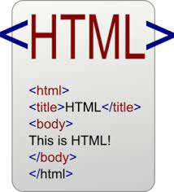

HTML, siglas en inglés de HyperText Markup Language (‘lenguaje de marcado de hipertexto’), hace referencia al lenguaje de marcado para la elaboración de páginas web. Es un estándar que sirve de referencia del software que conecta con la elaboración de páginas web en sus diferentes versiones, define una estructura básica y un código (denominado código HTML) para la definición de contenido de una página web, como texto, imágenes, videos, juegos, entre otros.
La historia completa de HTML es algo larga, por lo que se muestra resumida a partir de la información que se puede encontrar en Wikipedia. El origen de HTML se remonta a 1980, cuando el físico Tim Berners-Lee, investigador del CERN (Organización Europea para la Investigación Nuclear) propuso un nuevo sistema de “hipertexto” para compartir documentos. Los sistemas de hipertexto habían sido desarrollados años antes. En el ámbito de la informática, el hipertexto permite que los usuarios accedan a la información relacionada con los documentos electrónicos que visualizan. En cierta manera, los primitivos sistemas de hipertexto podrían asimilarse a los enlaces de las páginas web actuales.
Aquí verás algunas de las etiquetas más utilizadas y cuál es el código utilizado
| Name | Phone | |
|---|---|---|
| John | 577854 | 577855 |
| Jack | 577856 | 577857 |